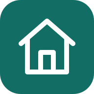

Луговой переулок дом 1
Введите один номер, несколько через запятую или диапазон.
Разработчик: Прудников Евгений Сергеевич
Бесплатное использование, изменение и распространение. Продажа и платный доступ запрещены без письменного разрешения автора.
Схема условная, без масштаба. Стояк показывает расположение квартир по вертикали, а не схему инженерных коммуникаций.
Загрузка…
На телефоне листайте схему в стороны. Нажатие на номер добавляет квартиру.
iPhone, Safari: нажмите «Поделиться», затем «На экран Домой».
Android, Chrome: откройте меню браузера и выберите «Установить приложение» или «Добавить на главный экран».
Если вы открыли ссылку внутри мессенджера, сначала откройте её в обычном браузере.
Офлайн-доступ подготавливается после первой загрузки.
Для расчёта квартир включите JavaScript в браузере.